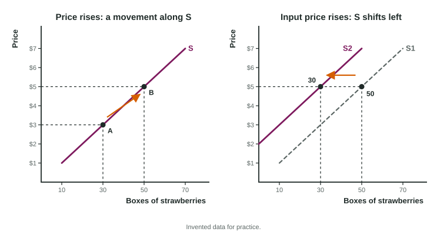

A strawberry farm sells 20 boxes at the weekend market when the price is $4. When the price reaches $5, it picks the slower back rows too and brings 24. The next spring, fertilizer doubles in price, and the farm brings fewer boxes even at $5. The first change moved the farm along its supply curve. The second moved the curve itself.
What supply is
Supply is the whole list of quantities sellers are willing and able to offer at each possible price, holding everything else the same. One number on the list, the amount offered at one price, is the quantity supplied. On a graph with price on the vertical axis and quantity on the horizontal axis, supply is a curve that slopes up, labeled S.
The law of supply and why it holds
The law of supply: other things equal, when the price of a good rises, the quantity supplied rises, and when the price falls, the quantity supplied falls. Price and quantity supplied move together, a direct relationship.
Why? Producing more usually costs more for each extra unit. A bakery that already runs its ovens all day can bake more bread only by paying overtime or renting another oven. It will do that only if the price of bread is high enough to cover the extra cost. A higher price also draws resources toward the good: a farmer plants more strawberries and fewer beans when strawberries sell for more.
A movement along the curve or a shift

The rule matches demand. A change in the good's own price moves sellers along the same curve: a change in quantity supplied. A change in anything else that affects how much sellers offer at every price shifts the whole curve: a change in supply. An increase in supply is a shift to the right (more offered at each price); a decrease is a shift to the left.
Say right and left, not up and down. Because supply slopes up, a curve that moves right also sits lower, so a student who writes "supply rises, the curve moves up" has drawn a decrease.
The determinants of supply
| Determinant | Change | Supply |
|---|---|---|
| Input prices | Flour gets dearer (for bread) | shifts left |
| Technology | A robot halves assembly time | shifts right |
| Prices of other goods the seller could make | Soybeans pay more (for corn on the same land) | shifts left |
| Taxes and subsidies on sellers | A payment for each chair produced | shifts right |
| Expectations | Sellers expect a higher price next month | shifts left now |
| Number of sellers | Half the ferry companies close | shifts left |
Most of these work through cost. Cheaper input prices and better technology lower the cost of each unit, so sellers offer more at each price. A tax on each unit sold raises the cost of selling it; a subsidy for each unit lowers it. Weather and natural events count as input changes: a frost destroys part of a crop, so less is offered at each price.
Market supply: add across
Market supply is the sum of every seller's supply: add the quantities at the same price, so the market curve is the horizontal sum of the sellers' curves.
Worked example: two farms make a market. Two farms sell strawberries at a weekend market (invented data):
| Price per box | Fennel Farm | Ridge Farm | Market |
|---|---|---|---|
| $2 | 12 | 8 | 20 |
| $3 | 16 | 14 | 30 |
| $4 | 20 | 20 | 40 |
| $5 | 24 | 26 | 50 |
- Add across each row. At $4: boxes.
- Own price rises from $3 to $5. The market quantity supplied rises from 30 to 50: a movement along market supply.
- A third farm joins and offers 10 boxes at each price. The market column becomes 30, 40, 50 and 60: market supply shifts right.
Check the direction with the law of supply: down the table, as the price rises, every column should grow.
On the exam
Ask first whether the change is the good's own price. If it is, the quantity supplied changes along the curve. If not, find the determinant: does it make each unit cheaper or dearer to produce, or change how many sellers there are? Then shift S right for more and left for less, label the new curve S2, and keep S1 on the graph.